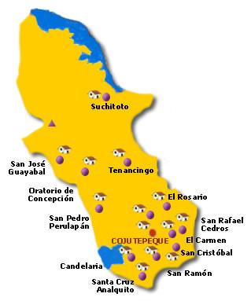

Cabañas es un departamento de la zona paracentral de El Salvador. Su cabecera departamental es Sensuntepeque. Esta región tiene muchas reservas naturales. El departamento fue nombrado en honor del político centroamericanista hondureño, José Trinidad Cabañas.
Cuscatlán fue erigido por decreto del Supremo Gobierno el 22 de mayo de 1835, y lo componían los distritos de Suchitoto, Cojutepeque, Ilobasco, Chalatenango, Tejutla y Opico, comprendiendo un total de 64 pueblos. Por decreto del Poder Legislativo, del 5 de abril de 1842, se le separó el distrito de Opico, reincorporándolo al de San Salvador. El decreto de 14 de febrero de 1855 dividió el departamento en dos: Chalatenango y el actual departamento de Cuscatlán. Finalmente, el 10 de febrero de 1873, se decretó la erección del departamento de Cabañas, a expensas del de Cuscatlán y de San Vicente. La cabecera fue en un principio la ciudad de Suchitoto, pero el 12 de noviembre de 1861 se trasladó a Cojutepeque. De población pipil precolombina, su nombre etimológicamente significa “lugar de joyas y collares”, que proviene de las voces “coxcatl”, “cuzcatl” o “cuzcat” (joya preciosa, cuenta de escapulario, collar) y “tlan” o “tan” (preposición locativa).
Se encuentra situado en la región central del país y limita al N y NE con el departamento de Chalatenango, al E con Cabañas, al SE con San Vicente, al S con el Lago de Ilopango y el departamento de La Paz y, por último, al O con el departamento de San Salvador. En el N el valle del río Lempa origina una región plana y fértil, apropiada para la actividad agrícola. El centro y sur del departamento, en cambio, son más montañosos. El departamento comprende una superficie de 756 km² y tiene una población estimada de 216,446 habitantes (2007).
Se cultiva sobre todo caña de azúcar y en menor proporción, tabaco de excepcional calidad, café y cereales. La cabecera departamental es Cojutepeque, una de las ciudades relevantes de El Salvador conocida como "la ciudad de las neblinas", en años anteriores, esta ciudad, se destacó por ser un significativo centro comercial, importante para la manufactura del tabaco, el dulce de panela y café de excelente calidad. El trabajo artesanal se encuentra muy desarrollado en todo el departamento; cabe mencionar las localidades de Tenancingo, donde se realizan trabajos de cestería y se fabrican sombreros y esteras, y Suchitoto, centro turístico donde se conservan construcciones coloniales y se desarrolla la alfarería, cestería y pirotecnia.